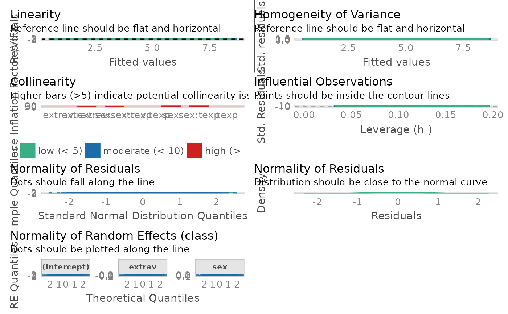
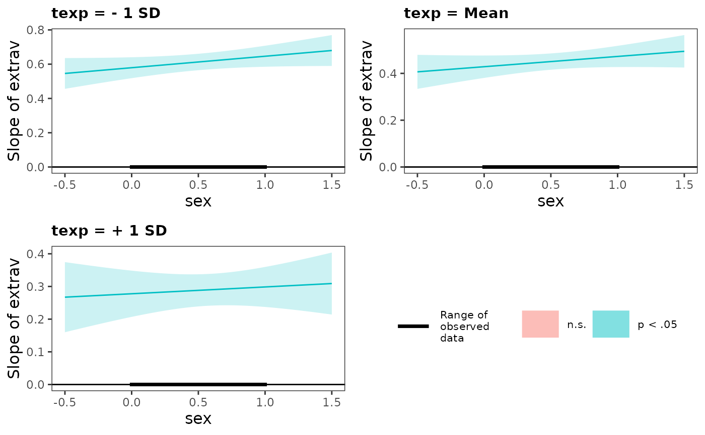

Integrated Function for Mixed Effect Model
integrated_multilevel_model_summary.Rd![[Stable]](figures/lifecycle-stable.svg)
It will first compute the mixed effect model. It will use either the nlme::lme or the lmerTest::lmer for linear mixed effect model. It will use lme4::glmer for generalized linear mixed effect model.
Then, it will print the model summary and the panel of the plots that are useful for checking assumption (default is FALSE). If you requested the interaction plot (default is TRUE), it will graph the interaction (Currently only support lme model but not glme)
If you requested simple slope summary, it will uses the interaction::sim_slopes() to generate the slope estimate at varying level of the moderator (see ?simple_slope for more detail)
integrated_multilevel_model_summary( data, model = NULL, response_variable = NULL, random_effect_factors = NULL, non_random_effect_factors = NULL, two_way_interaction_factor = NULL, three_way_interaction_factor = NULL, family = NULL, cateogrical_var = NULL, id = NULL, graph_label_name = NULL, estimation_method = "REML", opt_control = "bobyqa", na.action = stats::na.omit, model_summary = TRUE, interaction_plot = TRUE, y_lim = NULL, plot_color = FALSE, digits = 3, use_package = "lmerTest", simple_slope = FALSE, assumption_plot = FALSE, quite = FALSE, streamline = FALSE, return_result = FALSE )
Arguments
| data | data frame |
|---|---|
| model |
|
| response_variable | DV (i.e., outcome variable / response variable). Length of 1. Support |
| random_effect_factors | random effect factors (level-1 variable for HLM from a HLM perspective) Factors that need to estimate fixed effect and random effect (i.e., random slope / varying slope based on the id). Support |
| non_random_effect_factors | non-random effect factors (level-2 variable from a HLM perspective). Factors only need to estimate fixed effect. Support |
| two_way_interaction_factor | two-way interaction factors. You need to pass 2+ factor. Support |
| three_way_interaction_factor | three-way interaction factor. You need to pass exactly 3 factors. Specifying three-way interaction factors automatically included all two-way interactions, so please do not specify the two_way_interaction_factor argument. Support |
| family | a GLM family. It will passed to the family argument in glmer. See |
| cateogrical_var | list. Specify the upper bound and lower bound directly instead of using ± 1 SD from the mean. Passed in the form of |
| id | the nesting variable (e.g. group, time). Length of 1. Support |
| graph_label_name | optional vector or function. vector of length 2 for two-way interaction graph. vector of length 3 for three-way interaction graph. Vector should be passed in the form of c(response_var, predict_var1, predict_var2, ...). Function should be passed as a switch function (see ?two_way_interaction_plot for an example) |
| estimation_method | character. |
| opt_control | default is |
| na.action | default is |
| model_summary | print model summary. Required to be |
| interaction_plot | generate interaction plot. Default is |
| y_lim | the plot's upper and lower limit for the y-axis. Length of 2. Example: |
| plot_color | If it is set to |
| digits | number of digits to round to |
| use_package | Default is |
| simple_slope | Slope estimate at ± 1 SD and the mean of the moderator. Uses |
| assumption_plot | Generate an panel of plots that check major assumptions. It is usually recommended to inspect model assumption violation visually. In the background, it calls |
| quite | suppress printing output |
| streamline | print streamlined output. |
| return_result | If it is set to |
![[Experimental]](figures/lifecycle-experimental.svg)
Value
a list of all requested items in the order of model, model_summary, interaction_plot, simple_slope
Examples
fit <- integrated_multilevel_model_summary( data = popular, response_variable = popular, random_effect_factors = c(extrav), non_random_effect_factors = texp, two_way_interaction_factor = c(extrav, texp), graph_label_name = c("popular", "extraversion", "teacher experience"), id = class )#>#> Warning: Random effect variances not available. Returned R2 does not account for random effects.#> #> #> Model Summary #> Model Type = Linear Mixed Effect Model (fitted using lme4 or lmerTest) #> Outcome = popular #> Predictors = extrav, texp, extrav:texp #> #> Model Estimates #> ───────────────────────────────────────────────────────────────────────────────────── #> Parameter Effects Coefficient t df SE p 95% CI #> ───────────────────────────────────────────────────────────────────────────────────── #> (Intercept) fixed -1.211 -3.772 1992 0.321 0.000 *** [-1.840, -0.582] #> extrav fixed 0.891 19.822 1992 0.045 0.000 *** [ 0.803, 0.979] #> texp fixed 0.252 12.758 1992 0.020 0.000 *** [ 0.213, 0.291] #> extrav:texp fixed -0.027 -9.563 1992 0.003 0.000 *** [-0.033, -0.022] #> ───────────────────────────────────────────────────────────────────────────────────── #> #> Goodness of Fit #> ─────────────────────────────────────────────────────────────── #> AIC BIC R²_conditional R²_marginal RMSE σ #> ─────────────────────────────────────────────────────────────── #> 5710.769 5755.576 NaN 0.415 0.921 0.943 #> ─────────────────────────────────────────────────────────────── #> #> Model Assumption Check #> OK: Model is converged #> Warning: Singularity is detected. See ?lme4::isSingular() #> Warning: Autocorrelated residuals detected (p < .001). #> Warning: Non-normality of residuals detected (p = 0.003). #> Unable to check autocorrelation. Try changing na.action to na.omit. #> OK: Error variance appears to be homoscedastic (p = 0.846). #> Cautious: Moderate multicolinearity detected (5 < VIF < 10). Please inspect the following table to identify high correlation factors. #> Multicollinearity Table #> ─────────────────────────────── #> Term VIF SE_factor #> ─────────────────────────────── #> extrav 5.281 2.298 #> texp 3.900 1.975 #> extrav:texp 7.082 2.661 #> ─────────────────────────────── #># \donttest{ fit <- integrated_multilevel_model_summary( data = popular, response_variable = popular, random_effect_factors = c(extrav, sex), non_random_effect_factors = texp, three_way_interaction_factor = c(extrav, sex, texp), # three-way interaction graph_label_name = c("popular", "extraversion", "sex", "teacher experience"), id = class, simple_slope = TRUE, # you can request simple slope assumption_plot = TRUE, # you can also request assumption plot plot_color = TRUE # you can also request the plot in color )#>#>#>#>#>#>#>#>#>#>#> Warning: Random effect variances not available. Returned R2 does not account for random effects.#> #> #> Model Summary #> Model Type = Linear Mixed Effect Model (fitted using lme4 or lmerTest) #> Outcome = popular #> Predictors = extrav, sex, texp, extrav:sex, extrav:texp, sex:texp, extrav:sex:texp #> #> Model Estimates #> ───────────────────────────────────────────────────────────────────────────────────────── #> Parameter Effects Coefficient t df SE p 95% CI #> ───────────────────────────────────────────────────────────────────────────────────────── #> (Intercept) fixed -0.958 -2.882 1985 0.332 0.004 ** [-1.609, -0.306] #> extrav fixed 0.757 14.314 1985 0.053 0.000 *** [ 0.653, 0.861] #> sex fixed 0.714 1.890 1985 0.378 0.059 [-0.026, 1.454] #> texp fixed 0.217 10.201 1985 0.021 0.000 *** [ 0.175, 0.259] #> extrav:sex fixed 0.094 1.471 1985 0.064 0.141 [-0.031, 0.219] #> extrav:texp fixed -0.023 -6.489 1985 0.004 0.000 *** [-0.030, -0.016] #> sex:texp fixed 0.020 0.861 1985 0.024 0.389 [-0.026, 0.067] #> extrav:sex:texp fixed -0.004 -0.829 1985 0.004 0.407 [-0.012, 0.005] #> ───────────────────────────────────────────────────────────────────────────────────────── #> #> Goodness of Fit #> ─────────────────────────────────────────────────────────────── #> AIC BIC R²_conditional R²_marginal RMSE σ #> ─────────────────────────────────────────────────────────────── #> 4827.902 4911.915 NaN 0.656 0.720 0.742 #> ─────────────────────────────────────────────────────────────── #> #> Model Assumption Check #> OK: Model is converged #> Warning: Singularity is detected. See ?lme4::isSingular() #> Warning: Autocorrelated residuals detected (p < .001). #> OK: residuals appear as normally distributed (p = 0.487). #> Unable to check autocorrelation. Try changing na.action to na.omit. #> OK: Error variance appears to be homoscedastic (p = 0.752). #>#> Warning: Model has interaction terms. VIFs might be inflated. You may check multicollinearity among predictors of a model without interaction terms.#> Warning: Severe multicolinearity detected (VIF > 10). Please inspect the following table to identify high correlation factors. #> Multicollinearity Table #> ───────────────────────────────────── #> Term VIF SE_factor #> ───────────────────────────────────── #> extrav 9.167 3.028 #> sex 107.181 10.353 #> texp 6.325 2.515 #> extrav:sex 93.909 9.691 #> extrav:texp 14.154 3.762 #> sex:texp 107.690 10.377 #> extrav:sex:texp 95.252 9.760 #> ─────────────────────────────────────#> #> Slope Estimates at Each Level of Moderators #> ──────────────────────────────────────────────────────────────────────── #> texp Level sex Level Est. S.E. t val. p 95% CI #> ──────────────────────────────────────────────────────────────────────── #> Low Low 0.579 0.031 18.595 0.000 *** [0.518, 0.640] #> High 0.646 0.031 20.660 0.000 *** [0.585, 0.708] #> Mean Low 0.429 0.024 17.555 0.000 *** [0.381, 0.476] #> High 0.472 0.023 20.434 0.000 *** [0.427, 0.518] #> High Low 0.278 0.036 7.697 0.000 *** [0.207, 0.348] #> High 0.298 0.031 9.565 0.000 *** [0.237, 0.360] #> ──────────────────────────────────────────────────────────────────────── #> Note: For continuous variable, low and high represent -1 and +1 SD from the mean, respectively.#> Warning: You requested > 2 plots. Since 1 plot can be displayed at a time, considering using Rmd for better viewing experience.# }